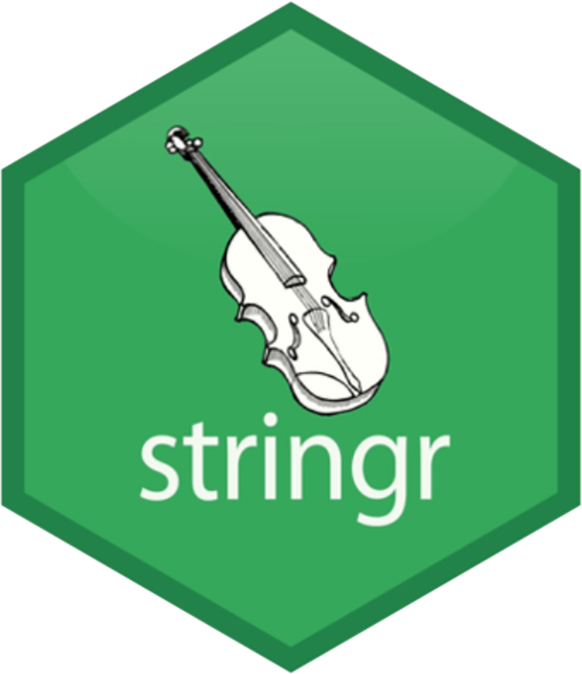
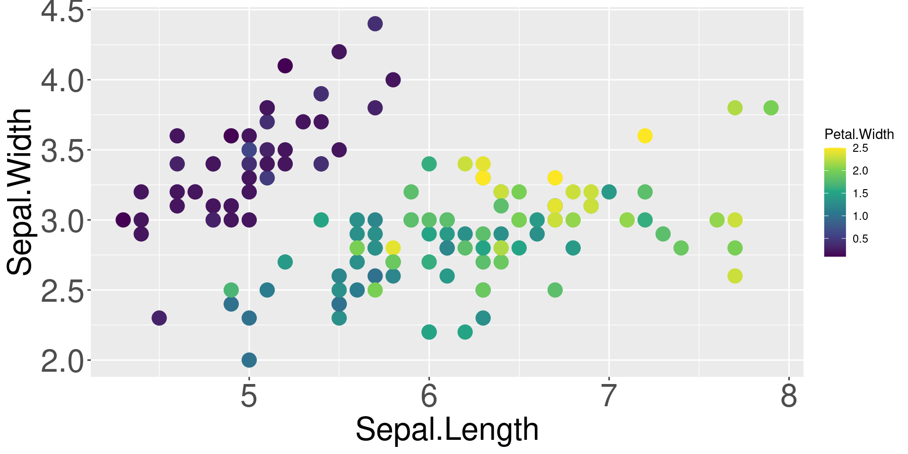
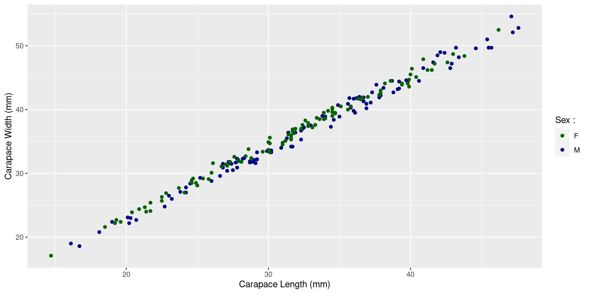
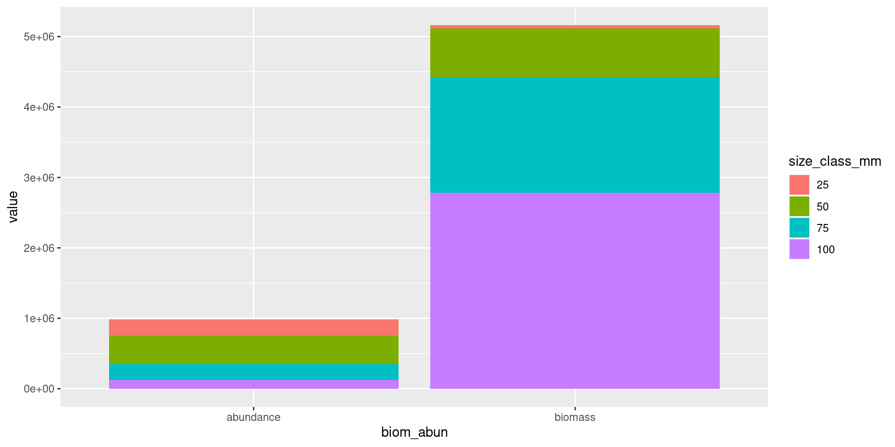
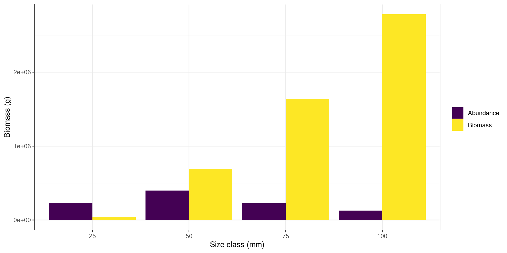
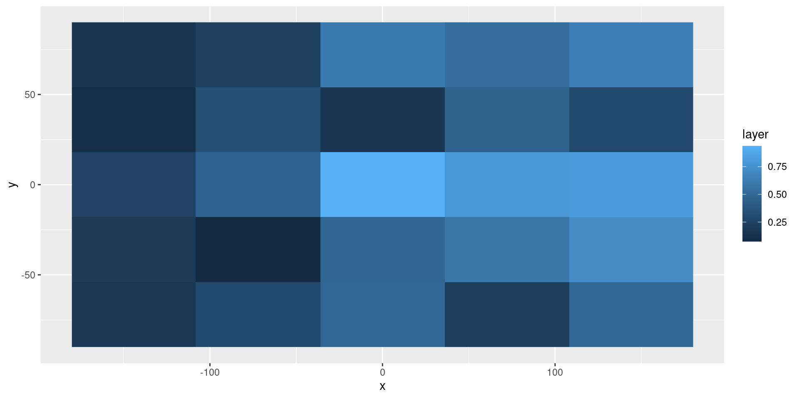

Formation R
Collection de packages tidyverse
Laure Velez (laure.velez@umontpellier.fr)
Gael Mariani (gael.mariani@umontpellier.fr)
Mathieu Depetris (mathieu.depetris@ird.fr)
Monique Simier (monique.simier@ird.fr)
05-06 decembre 2022
© RStudio

Plan de la formation
Préambule et introduction
- Prérequis et environnement de travail nécessaire à la formation
- Objectifs de la formation
- Présentation de tidyverse
Partie 1 : Importation de données sous R avec readr
Partie 2 : Manipulation de données avec dplyr
Partie 3 : Nettoyage des données avec tidyr
Partie 4 : Extension à la manipulation de données, cas spécifiques
- 4.1 : Manipuler du texte avec stringr
- 4.2 : Manipuler des dates avec lubridate
Partie 5 : Visualisation graphique avec ggplot2
Partie 6 : Cas pratiques sur vos données
Formation fortement inspirée du site de Joseph Larmarange
Préambule et introduction
- Prérequis et environnement de travail nécessaire à la formation
- Objectifs de la formation
- Présentation de tidyverse
Prérequis et environnement de travail nécessaire à la formation
- Avoir des notions de base dans l’utilisation de R
- Avoir une instance valide de R sur son poste (durant la formation utilisation de la version 4.2.1)
- Avoir installé correctement les versions des packages dplyr (utilisation de la version 1.0.10), lubridate (utilisation de la version 1.8.0), ggplot2 (utilisation de la version 3.3.6) et stringr (utilisation de la version 1.4.1)
Bonus non obligatoire
- Utilisation de l’environnement de développement Rstudio (utilisation de la version 2022.07.1 Build 554 sous Windows)
- Pour les utilisateurs de Windows installation de Rtools (utilisation de la version 4.2)
- Installation de Visual Studio Code (éditeur de code source autonome)
- Une instance de Java (idéalement une version JDK = kit de développement + moteur d’exécution des programmes compilés + outils de compilation)
Objectifs de la formation
- Vous présenter un panel de ce que l’on peut faire avec ces nouvelles méthodes et surtout vous donner les clés pour aller plus loin
- Un expert n’est pas forcément quelqu’un qui connaît toutes les fonctions de R par cœur, mais qui sait écouter, comprendre et aller chercher les informations dont il a besoin
- Pensez à jeter un coup d’œil aux cheatsheets
- Prendre le temps de discuter et de regarder vos données et/ou problèmes

Présentation de Tidyverse
- Tidyverse c’est quoi ?
- tidy + universe ou l’univers du «bien rangé» ou du rangement
- Collection d’extensions conçues pour travailler ensemble et basées sur une philosophie commune
- Le cœur du package inclut 8 packages
- ggplot2 : création de graphiques
- dplyr : manipulation de données au sens large
- tidyr : manipulation de données plus orientées variables
- readr : import
- purrr : fonction de vectorisation (remplacement des boucles classiques)
- tibble : «évolution» du data.frame
- stringr : manipulation de caractère
- forcats : série d’outils pour aider dans la manipulation des facteurs
Présentation de Tidyverse
- Lancement de la librairie
- Cependant je vous déconseille de faire comme ça
- En lançant cette commande, on charge dans R tous les packages associés à tidyverse (les 8 packages cités précédemment, mais aussi les dépendances associées)
- Avez-vous vraiment besoin de tout cela ?
- Potentiel impact sur vos futurs développements (surtout si vous commencez à développer des packages)
- L’idée est d’appliquer dès maintenant les bonnes pratiques et surtout de comprendre ce que cela implique de ne pas les suivre (ce qui est aussi votre droit !)
Avant d’aller plus loin
- L’utilisation de ces packages permet de faire beaucoup de choses, mais ne rend pas tout le reste obsolète
- Il y a plusieurs stratégies pour réaliser une action, il faut juste trouver le bon compromis (connaissances, temps de calcul, contexte global de votre projet…)
- Attention aux règles et conventions de nommages
- Règles pour nommer une variable (obligatoire) : ne pas commencer par un chiffre, pas d’espace, que des caractères alpha-numériques (A-z, 0-9) et le tiret du bas (_), ne pas utiliser de mots réservés (comme par exemple TRUE)
- Conventions pour nommer une variable (recommandé) : uniquement des lettres minuscules, séparer les mots des _ et les noms choisis doivent pouvoir donner l’information du contenu associé
Partie 1 : Importation de données sous R avec readr
La librairie readr
- Des fonctions de base de R sont dédiées à l’import de fichiers textes de type csv (
read.csv,read.csv2) ou tabulés (read.table) ou avec des séparateurs quelconques (read.delim) - La librairie readr propose des fonctions similaires sur le principe mais qui diffèrent des fonctions de base sur certains aspects.
- Ces fonctions de readr sont compatibles avec l’esprit Tidyverse car elles permettent de générer des tibbles
Un tibble … Cékoiça ???
- Le tibble est une évolution du data frame du R de base
- Ce format est géré par le package du même nom qui fait partie du coeur de tidyverse
- Les tibbles contiennent un attribut spec qui précise les spécifications des colonnes (nom et type)
- Ils s’affichent plus intelligemment que les data frames : seules les premières lignes sont affichées, ainsi que quelques informations supplémentaires utiles
- Ils autorisent des noms de colonnes qui sont invalides pour les data frames (espaces, caractères spéciaux, nombres…)
- Ils affichent un avertissement si on essaie d’accéder à une colonne qui n’existe pas
- Ils n’ont pas de noms de lignes (rownames).
Pour passer du tibble au dataframe et vice-versa
- La plupart des fonctions du tidyverse acceptent des data frames en entrée, mais retournent un objet de classe tibble
- On peut convertir un data frame en tibble avec la fonction
as_tibble, ou l’inverse avec la fonctionas.data.frame
Les principales fonctions de la librairie readr
Les fonctions de readr les plus utilisées sont :
read_delim: la plus générale, pour lire un fichier avec un délimiteur quelconqueread_csv: fichiers csv au format anglais (point décimal et séparateur virgule)read_csv2: fichiers csv au format français (virgule décimale et séparateur point-virgule)read_xxx_chunked(où xxx = csv, csv2, delim) : pour lire un fichier en “chunks”, c’est à dire en tranches dont on définit la taille en nombre de lignes. Cette fonction permet de lire de très gros fichiers et aussi d’appliquer une fonction (CallBack) sur les données à chaque tranche.
Importer en tibble le fichier Global_reef_fish_biomass.csv
Ce fichier est au format csv anglais (séparateur décimal = point et séparateur de colonnes = virgule).
Chaque ligne donne une valeur de biomasse pour une campagne (survey_id), une espèce de poisson (species_name) et une classe de taille de 0.5cm (size_class).
Lecture avec
read_delim: preciser le delimiteur de colonnes (ici la virgule)
- 0u bien avec
read_csv: delimiteur par defaut = virgule
Le tibble global_reef_fish_biomass
On vérifie sa classe avec class()
Le tibble global_reef_fish_biomass
On vérifie sa structure avec str()
Le tibble global_reef_fish_biomass
On vérifie son contenu avec head()
La fonction inverse : write_... pour exporter un fichier
write_csvpour exporter un tibble en csv
- ou
write_delimpour choisir le délimiteur de colonnes (ici tabulation)
Option 1 : read_csv2
Option 2 : read_delim sans préciser le séparateur décimal
PAS BON car les nombres décimaux (ex: biomass) sont lus comme du caractère
Option 3 : read_delim en précisant le séparateur décimal avec locale()
Le type des colonnes
Afficher les specifications avec spec
Simplifier les specifications avec col_condense
Forcer le type d’une colonne
Avec le paramètre col_types = list(...), on choisit de lire survey_id comme un entier col_integer(), method et block comme des facteurs col_factor(). Pour block on définit aussi des levels avec un certain ordre :
global_reef_fish_biomass <- read_csv(file = "./data/global_reef_fish_biomass.csv",
col_types = list(survey_id = col_integer(),
method = col_factor(),
block = col_factor(levels=c("3","2","1"))))
spec(global_reef_fish_biomass)
levels(global_reef_fish_biomass$block)
global_reef_fish_biomass <- droplevels(global_reef_fish_biomass)
levels(global_reef_fish_biomass$block)Importer en tibble le fichier Survey_metadata.csv
Ce fichier contient des métadonnées caractérisant les campagnes (survey_id) Particularités : séparateur “;” et 70 lignes de commentaires au début qui ne doivent pas être lues : utilisation du paramètre skip =
Avantages de readr vs. les fonctions de base
Pour les gros fichiers, readr est plus rapide
- Lecture du fichier biomasse avec la fonction
read.csvde base
- Lecture du même fichier avec
read_csvde la librairie readr
read_csv permet de lire depuis une archive, ce que ne permet pas read.csv
read_csv permet de lire depuis plusieurs fichiers et mêmes répertoires
La sélection de colonnes lors de la lecture avec read_csv est facilitée
- Par nom de colonne
La sélection de colonnes lors de la lecture avec read_csv est facilitée
- Par numéro de colonne
La sélection de colonnes lors de la lecture avec read_csv est facilitée
- Par numéro de colonne, en omettant certaines colonnes
On peut renommer certaines colonnes
NB : ne pas oublier everything() pour conserver à l’identique toutes les colonnes non renommées
On peut faire un filtre en entrée sur les valeurs d’une colonne avec read_..._chunked
- Pour sélectionner sur une colonne (ici la famille)
On peut faire un filtre en entrée sur les valeurs d’une colonne avec read_..._chunked
- Pour sélectionner sur plusieurs colonnes (ici la famille et la classe de taille)
f2 <- function(x, pos) subset(x, family == "Kyphosidae" & size_class>9 & size_class < 31)
kyphosidae_10_30_cm_biomass <- read_csv_chunked(file = "./data/global_reef_fish_biomass.csv",
callback = DataFrameCallback$new(f2),
chunk_size = 1000)
table(kyphosidae_10_30_cm_biomass$family, kyphosidae_10_30_cm_biomass$size_class)Exercice 1.1
- Lire le fichier Survey_metadata.csv => tibble
survey_metadata, - Lire le fichier Global_reef_fish_biomass.csv => tibble
global_reef_fish_biomass - Lire le fichier Global_reef_fish_abundance.csv => tibble
global_reef_fish_abundance
Exercice 1.1 corrigé
- Lire le fichier Survey_metadata.csv => tibble
survey_metadata, - Lire le fichier Global_reef_fish_biomass.csv => tibble
global_reef_fish_biomass
Exercice 1.2
Lire le fichier Survey_metadata.csv => tibble Survey_selection en sélectionnant le pays=Indonésie, la profondeur inférieure à 20m et la visibilité supérieure à 10m.
Exercice 1.2 corrigé
Lire le fichier Survey_metadata.csv => tibble Survey_selection en sélectionnant le pays Indonésie, la profondeur inférieure à 20m et la visibilité supérieure à 10m.
Partie 2 : Manipulation de données avec dplyr
dplyr
Pourquoi utiliser dplyr et sa syntaxe ?
- Syntaxe claire et cohérente
- “lien” avec le SQL
- deux “familles” de fonctions : résumé et vectorisation
- Utilisation de verbes
- Généralement plus rapides que leur équivalent sous R de base
- Permet d’enchainer les opérations avec des “pipes”
Manipulation des lignes
Manipulation de type extraction
Type de fonctions qui retournent un sous-ensemble de lignes
- Extraction d’une ou plusieurs lignes : fonctions de la famille slice & co
# sélection d'une ou plusieurs lignes par position absolue
slice()
# sélection au hasard d'un nombre de lignes ou d'une proportion du jeu de données
slice_sample()
# sélection des n dernières lignes
slice_tail()
# sélection des n premières lignes
slice_head()
# sélection des valeurs distinctes
distinct()
# sélection en fonction d'opérateurs logiques et/ou booléens
filter()Petit focus sur les opérateurs booléens et logiques
Renvoient une valeur TRUE ou FALSE
- les communs :
- certains plus particuliers :
- Attention aux priorités dans les interprétations
- & est plus fort que |, il sera exécuté en premier
- une solution est d’utiliser des () pour séparer vos opérateurs
Exercice 2.1
- A l’aide d’une fonction dplyr, vérifier s’il y a des données dupliquées dans le jeu de données “global_reef_fish_biomass”
- En une seule fois, selectionner les données dont la variable “biomass” est différent de 0, où la famille de l’espèce est différente de “Mullidae” et “Apogonidae” et pour finir où la classe de taille associée est <= 10.
Exercice 2.1 corrigé
- A l’aide d’une fonction dplyr, vérifier s’il y a des données dupliquées dans le jeu de données “global_reef_fish_biomass”
- En une seule fois, selectionner les données dont la variable “total” est différent de 0, où la famille de l’espèce est différente de “Mullidae” ou “Apogonidae” et pour finir où la classe de taille associée est <= 10.
Amélioration de la lisibilité du code
Ici on a effectué 2 opérations, mais on peut imaginer en faire beaucoup plus dans la réalité.
Grâce à la syntaxe de dplyr, on peut répondre à ce besoin de deux manières différentes.
La première est d’effectuer toutes les opérations en une fois en les emboîtant :
Cependant cela a plusieurs inconvénients. La structure est peu lisible, les opérations apparaissent dans l’ordre inverse de leur réalisation et il est difficile de voir quel paramètre se rapporte à quelle fonction.
Aller encore plus loin
Utilisation d’un nouvelle opérateur baptisé pipe
Il se note %>%
Son fonctionnement est le suivant : si j’exécute expr %>% f, le résultat de l’expression expr, à gauche du pipe, sera passé comme premier argument à la fonction f, à droite du pipe, ce qui revient à exécuter f(expr)
L’intérêt est que l’on peut enchainer plusieurs pipes
Avec notre exemple précédent cela donne :
Encore quelques fonctions de manipulation de lignes
Manipulation de type “tri”
- Ordonner les lignes d’une ou plusieurs colonnes
Manipulation de type “ajout”
- Ajouter une ligne dans un jeu de données
Manipulation des variables
Extraction d’une ou plusieurs colonnes
Type de fonctions qui retournent un sous-ensemble de colonnes sous la forme d’un vecteur ou d’une table
# extraction des valeurs d'une colonne sous la forme d'un vecteur
# on peut utiliser des noms ou les ids
pull()
# extraction d'une colonne sous la forme d'une table
# bien regarder les arguments de la fonction car on peut faire beaucoup
select()
# Changer l'ordre ou la place d'une ou plusieurs colonnes
# ne pas oublier les arguments .after et .before
relocate()Fonctions de vectorisation
Une des deux grandes familles de fonction avec dplyr
On a commencé à l’aborder de manière instinctive avec relocate()
Globalement, ce sont des fonctions qui ont un vecteur en entrée et retournent un vecteur de la même taille en sortie
- Petit bonus pour renommer les variables
Exercice 2.2
- À partir du jeu de données de sortie de l’exercice 1
- Créer une variable “survey_id_full” qui est la concaténation des variables survey_id, species_name et size_class
- Placer cette nouvelle colonne avant la colonne survey_id
- Supprimer la quatrième colonne du jeu de données (utiliser son indice) ainsi que la colonne reporting_name
- Renommer la variable size_class en size_class_cm
- Créer une nouvelle variable size_class_mm qui convertit la variable size_class_cm en mm
- Supprimer la variable size_class_cm
- Trier par ordre décroissant les données en fonction de la variable size_class_mm
- Utiliser des pipes à la fin pour avoir une syntaxe “propre” et souffler un bon coup :)
Exercice 2.2 corrigé
- À partir du jeu de données de sortie de l’exercice 1
- Créer une variable “survey_id_full” qui est la concaténation des variables survey_id, species_name et size_class
- Placer cette nouvelle colonne avant la colonne survey_id
- Supprimer la quatrième colonne du jeu de données (utiliser son indice) ainsi que la colonne reporting_name
- Renommer la variable size_class en size_class_cm
- Créer une nouvelle variable size_class_mm qui convertit la variable size_class_cm en mm
- Supprimer la variable size_class_cm
- Trier par ordre décroissant les données en fonction de la variable size_class_mm
- Utiliser des pipes à la fin pour avoir une syntaxe “propre” et souffler un bon coup :)
# solution
biomass_exercice2_2 <- mutate(.data = biomass_exercice2_1_distinct_filter,
survey_id_full = paste(survey_id,
species_name,
size_class,
sep = "_")) %>%
relocate(survey_id_full,
.before = survey_id) %>%
dplyr::select(-4,
-reporting_name) %>%
rename(size_class_cm = size_class) %>%
mutate(size_class_mm = size_class_cm * 10) %>%
dplyr::select(-size_class_cm) %>%
arrange(desc(size_class_mm))Fonctions de resumé
La deuxième grande famille
Fonctions qui vont créer une nouvelle table avec des resumés statistiques. De manière globale, les fonctions associées vont utiliser en entrée des vecteurs et en sortie une ou plusieurs valeurs ( en nombre inférieur au nombre de vecteurs d’entrée)
Fonction clé
summarise()
# Beaucoup, beaucoup d'options et de possibilités
# Compter le nombre de valeurs/lignes
n()
# Compter le nombre de valeurs/lignes distinctes
n_distinct()
# Faire une moyenne
mean()
# Faire une somme, option na.rm disponible
sum()
# Utiliser des notions de position
first()
last()
# Ou de rang
quantile()
min()
max()Introduction à la notion de groupe
Pour le moment on a fait des opérations sur l’ensemble du jeu de données, pas très pertinent non ?
Fonction de création de groupe
- Attention à ce que vous faites ! Par défaut, les groupes sont gardés en mémoire dans votre jeu de données de sortie (lisez les messages de R). Pour y remédier :
- Cette notion de groupe peut être utilisée avec d’autres fonctions (comme un mutate)
Exercice 2.3
- À partir du jeu de données de sortie de l’exercice 2
- Effectuer la somme de la biomasse (variable biomass) en fonction de la variable survey_id_full créée précédemment
- Pour survey_id_full répétés, ne garder que la première ligne de chaque répétition. Attention à bien conserver toutes les colonnes associées (une fois la fonction “trouvée” regarder du côté des arguments en option)
- Créer un nouveau jeu de données qui exprime le nombre d’échantillons disponibles par famille et vérifier la cohérence du nombre total obtenu avec le jeu de données de départ.
Exercice 2.3 corrigé
- À partir du jeu de données de sortie de l’exercice 2
- Effectuer la somme de la biomasse (variable biomass) en fonction de la variable survey_id_full créée précédemment
- Pour survey_id_full répétés, ne garder que la première ligne de chaque répétition. Attention à bien conserver toutes les colonnes associées (une fois la fonction “trouvée” regarder du côté des arguments en option)
- Créer un nouveau jeu de données qui exprime le nombre d’échantillons disponibles par famille et vérifier la cohérence du nombre total obtenu avec le jeu de données de départ.
# solution
biomass_exercice2_3 <- biomass_exercice2_2 %>%
dplyr::group_by(survey_id_full) %>%
mutate(sum_biomass = sum(x = biomass)) %>%
ungroup() %>%
distinct(survey_id_full,
.keep_all = TRUE)
biomass_exercice2_3_sample_verification <- dplyr::group_by(.data = biomass_exercice2_2,
family) %>%
summarise(nb_sample_family = n()) %>%
mutate(total = sum(nb_sample_family))Fonction bonus très utile
case_when : généralisation vectorisée de if(s)
- Vectorisation de multiples if_else sous R et CASE WHEN en SQL
- Améliore grandement la lisibilité de vos fonctions
- Syntaxe de base :
- Pensez bien à toujours mettre un TRUE (=valeur par défaut)
- Attention à ne pas mélanger les types, il existe différents NA :
- NA_integer_
- NA_real_
- NA_complex_
- NA_character_
Combinaison de jeux de données 1
Jointures “simples”
- Il doit y avoir une cohérence entre le nombre de colonnes ou de lignes
- Attention, aucune vérification de cohérence des jointures
Combinaison de jeux de données 2
Jointures de type relationnel
- Très proche du SQL
- Très puissantes et permettent de se poser les bonnes questions !
- Attention à bien spécifier l’argument by (ne pas laisser place à l’interprétation !)
- On peut spécifier une seule ou plusieurs colonnes si les noms sont identiques entre les deux jeux de données
- Sinon on spécifie le nom du jeu de données à “gauche” et celui qui est à “droite”
Exercice 2.4
- À partir du jeu de données de sortie de l’exercice 2.3 (biomass_exercice2_3)
- Faire la “meilleure” jointure avec le jeu de données survey_metadata et expliquer votre choix
- Pour vous aider :
- Y-a-t-il un problème avec le jeu de données survey_metadata ?
- Réfléchissez en termes du nombre de lignes obtenues pour chaque fonction de jointure
Exercice 2.4 corrigé
- À partir du jeu de données de sortie de l’exercice 2.3 (biomass_exercice2_3)
- Faire la “meilleure” jointure avec le jeu de données survey_metadata et expliquer votre choix
- Pour vous aider :
- Y-a-t-il un problème avec le jeu de données survey_metadata ?
- Réfléchissez en termes du nombre de lignes obtenues pour chaque fonction de jointure
Partie 3 : Nettoyage des données avec tidyr
Tidyr
L’objectif du package tidyr est de fournir des fonctions pour arranger et nettoyer ses données dans le but de les convertir dans un format “tidy”
Les différents verbes viennent s’ajouter à tous ceux que nous avons déjà vus avec readr et dplyr et ils s’intègrent parfaitement dans la série de pipe %>% permettant d’enchainer les opérations
Les données “tidy”, qu’est ce que c’est?
1 variable = 1 colonne
1 observation = 1 ligne/case
1 type d’observation par table
Pour visualiser le cheatsheet tidyr cliquez ici
Tidyr
Pour illustrer cette partie nous utiliserons le jeu de données popEU qui décrit le nombre d’habitants par pays pour les années 2014, 2015 et 2016
| pays | year | pop | |
|---|---|---|---|
| 10 | Belgique | 2014 | 11.21 |
| 11 | Belgique | 2015 | NA |
| 12 | Belgique | 2016 | NA |
| 13 | Allemagne | 2014 | 80.98 |
| 14 | Allemagne | 2015 | 81.69 |
| 15 | Allemagne | 2016 | 82.35 |
Les principales fonctions de tidyr
Modelage des tableaux
pivot_wider()et pivot_longer()sont les successeurs des fonctions en base R du package reshape puis reshape2. Et se nommaient spread()et gather() dans les premières versions de tidyr
Applications - pivot_wider
Transformer le jeu de données en format “wide” en utilisant la fonction pivot_wider(). Nous voulons obtenir une colonne par année
| pays | 2014 | 2015 | 2016 |
|---|---|---|---|
| France | 66.13 | 66.422 | 66.602 |
| Espagne | 46.48 | 46.440 | 46.480 |
| Italie | 60.79 | 60.730 | 60.630 |
| Belgique | 11.21 | NA | NA |
| Allemagne | 80.98 | 81.690 | 82.350 |
Gestion des valeurs manquantes “NA”
Applications - pivot_longer/replace_na
Re-transformer le jeu de données en format “long” en utilisant la fonction pivot_longer() et remplacer les valeurs de NA dans la colonne “pop”, par la population moyenne de la Belgique pour ces 2 années (11,27 M)
| pays | year | pop |
|---|---|---|
| Belgique | 2014 | 11.21 |
| Belgique | 2015 | 11.27 |
| Belgique | 2016 | 11.27 |
| Allemagne | 2014 | 80.98 |
| Allemagne | 2015 | 81.69 |
| Allemagne | 2016 | 82.35 |
Applications - pivot_longer/drop_na
Re-transformer le jeu de données en format “long” en utilisant la fonction `pivot_longer()` et supprimer les lignes contenant des NA dans la colonne pop. Essayer d’enchainer les opérations à l’aide du pipe %>%
| pays | year | pop |
|---|---|---|
| Italie | 2015 | 60.73 |
| Italie | 2016 | 60.63 |
| Belgique | 2014 | 11.21 |
| Allemagne | 2014 | 80.98 |
| Allemagne | 2015 | 81.69 |
| Allemagne | 2016 | 82.35 |
Applications - pivot_longer/fill
Re-transformer le jeu de données en format “long” en utilisant la fonction `pivot_longer()` et compléter les valeurs manquantes par la valeur du pays correspondant. Essayer d’enchainer les opérations à l’aide du pipe %>%
| pays | year | pop |
|---|---|---|
| Belgique | 2014 | 11.21 |
| Belgique | 2015 | 11.21 |
| Belgique | 2016 | 11.21 |
| Allemagne | 2014 | 80.98 |
| Allemagne | 2015 | 81.69 |
| Allemagne | 2016 | 82.35 |
Combinaison des variables
Applications - separate
A partir du dernier popEU_long généré, transformer la colonne pop en caractères et créer deux nouvelles colonnes “millions” et “milliers”
| pays | year | millions | milliers |
|---|---|---|---|
| France | 2014 | 66 | 13 |
| France | 2015 | 66 | 422 |
| France | 2016 | 66 | 602 |
| Espagne | 2014 | 46 | 48 |
| Espagne | 2015 | 46 | 44 |
| Espagne | 2016 | 46 | 48 |
Applications - unite
Recréer la colonne pop comme à l’origine en la nommant population
| pays | year | population |
|---|---|---|
| France | 2014 | 66.13 |
| France | 2015 | 66.422 |
| France | 2016 | 66.602 |
| Espagne | 2014 | 46.48 |
| Espagne | 2015 | 46.44 |
| Espagne | 2016 | 46.48 |
Applications - expand
Générer un tableau avec toutes les combinaisons possibles pays/population. Que remarquons-nous ?
| pays | population |
|---|---|
| Allemagne | 11.21 |
| Allemagne | 46.44 |
| Allemagne | 46.48 |
| Allemagne | 60.63 |
| Allemagne | 60.73 |
| Allemagne | 60.79 |
La valeur 11.21 n’apparait qu’une seule fois, ce sont bien les combinaisons uniques.
Exercice 3.1
- Chargez les données d’abondance. Les données sont elles tidy ?
Exercice 3.1 corrigé
- Chargez les données d’abondance. Les données sont elles tidy ?
Non les données ne sont pas tidy, car elles sont en format “wide”
Exercice 3.2
- Transformez les en format tidy. Les nouvelles colonnes seront “sp_size” et “abundance”
- Créez une nouvelle variable “survey_id_full” qui est l’union entre le survey_id et sp_size avec comme séparateur un “_”. Pensez à enchainer les opérations
Exercice 3.2 corrigé
- Transformez les en format tidy. Les nouvelles colonnes seront “sp_size” et “abundance”
- Créez une nouvelle variable “survey_id_full” qui est l’union entre le survey_id et sp_size avec comme séparateur un “_”. Pensez à enchainer les opérations
| survey_id_full | abundance |
|---|---|
| 1003253_Cymatogaster.aggregata_5 | 250 |
| 1003253_Embiotoca.lateralis_10 | 2 |
| 1003253_Embiotoca.lateralis_12.5 | 5 |
| 1003253_Ophiodon.elongatus_35 | 4 |
| 1003253_Ophiodon.elongatus_40 | 1 |
| 1003253_Rhacochilus.vacca_10 | 8 |
Exercice 3.3
- Créez un seul tableau regroupant biomasse et abondance
Exercice 3.3 corrigé
- Créez un seul tableau regroupant biomasse et abondance
Exercice 3.4
- Créez 2 nouvelles colonnes “genus” et “species” à partir de species_name
Exercice 3.4 corrigé
- Créez 2 nouvelles colonnes “genus” et “species” à partir de species_name
| family | genus | species | biomass |
|---|---|---|---|
| Labridae | Eupetrichthys | angustipes | 19.8984 |
| Plesiopidae | Trachinops | taeniatus | 76.6364 |
| Pomacentridae | Parma | microlepis | 169.2130 |
| Labridae | Labridae | spp | 19.8984 |
| Plesiopidae | Trachinops | taeniatus | 306.5455 |
| Pomacentridae | Chromis | hypsilepis | 6267.5000 |
Exercice 3.5
- Transformez le tibble en sf object avec la commande sf::st_as_sf(survey, coords = c(“longitude”, “latitude”), remove = FALSE)
Exercice 3.5 corrigé
- Transformez le tibble en sf object avec la commande sf::st_as_sf(survey, coords = c(“longitude”, “latitude”), remove = FALSE)
# solution
data_sf <-
sf::st_as_sf(
biomass_abundance,
coords = c("longitude", "latitude") ,
remove = FALSE,
crs = "+proj=longlat +datum=WGS84 +ellps=WGS84 +towgs84=0,0,0"
)Error in st_as_sf.data.frame(biomass_abundance, coords = c("longitude", : missing values in coordinates not allowedNous obtenons une erreur, car il n’est pas possible de convertir un tibble en objet sf s’il y a des valeurs manquantes dans les colonnes longitude et latitude
Exercice 3.6
- Corrigez l’erreur
Exercice 3.6 corrigé
- Corrigez l’erreur
# solution
biomass_survey_abundance_exercice3_6 <- biomass_abundance %>%
drop_na(latitude) %>% #supression des lignes contenant des NA dans la colonne latitude
drop_na(longitude) %>% #supression des lignes contenant des NA dans la colonne longitude
sf::st_as_sf(
.,
coords = c("longitude", "latitude"),
remove = FALSE,
crs = "+proj=longlat +datum=WGS84 +ellps=WGS84 +towgs84=0,0,0"
)
save(biomass_survey_abundance_exercice3_6,
file = "./data/biomass_survey_abundance_exercice3_6.RData")Partie 4 : Extension à la manipulation de données, cas spécifiques

4.1 : Manipuler du texte avec stringr
Conçu pour manipuler les chaines de caractères “facilement”.
En plus d’être plus faciles à utiliser, le nom des fonctions dans
stringr représentent bien ce qu’elles permettent de faire.
Le nom de toutes les fonctions dans stringr commence par str_.
Voici quelques exemples :
str_detect: Détection de caractèresstr_extract: Extraction de caractèresstr_replace: Remplacement de caractères
str_trim: Enlève les espacesstr_split: Sépare une chaine de caractèresstr_length: Nombre de caractère
stringr est disponible ici.
Création d’un dataframe de chaines de caractères
tmp <- tibble(nom = c("Micheline Sétou", "Jean-Jacques Apeprès", "Martine Sérien"),
num_rue = c("12", "15 ou 16", "NA"),
nom_rue = c("Rue des peupliers", "Rue + un arbre", "NA"),
ville = c("Montpellier", "Montpellier", "Montpellier"))
kable(tmp, html_font = "Computer Modern", table.attr = "style='width:60%;'")| nom | num_rue | nom_rue | ville |
|---|---|---|---|
| Micheline Sétou | 12 | Rue des peupliers | Montpellier |
| Jean-Jacques Apeprès | 15 ou 16 | Rue + un arbre | Montpellier |
| Martine Sérien | NA | NA | Montpellier |
Détection de caractères
On utilise la fonction str_detect() et les deux arguments principaux :
string: Le/Les caractère(s) qui vont passer au détecteur.pattern: Le caractère à détecter.
La fonction renvoie TRUE ou FALSE en fonction de la présence ou non du caractère.
Sous-sélection de certains caractères
On utilise la fonction str_subset() et les deux arguments principaux :
string: Le/Les caractère(s) qui vont passer au détecteur.pattern: Le caractère à détecter.
Contrairement à str_detect(), la fonction str_subset() renvoie les caractères qui contiennent le pattern à détecter.
Extraction de caractères
On utilise la fonction str_extract() et ses arguments principaux :
string: Le/Les caractère(s) qui vont passer à l’extracteur.pattern: Le caractère à extraire.
Remplacer un caractère par un autre
On utilise la fonction str_replace() et ces arguments principaux :
string: Le/Les caractère(s) qui vont passer à l’extracteur.pattern: Le caractère à remplacer.replacement: Le caractère de remplacement.
Concaténer des chaînes de caractères
On utilise la fonction str_glue() et ces deux principaux arguments :
- Le/les expressions à assembler entre
"". Quand on veut ajouter l’information issue d’un data.frame, on met entre{}. .sep= le séparateur
Concaténer des chaînes de caractères
On utilise la fonction str_glue() et ces deux principaux arguments :
- Le/les expressions à assembler entre
"". Quand on veut ajouter l’information issue d’un data.frame, on met entre{}. .sep= le séparateur
Exemple sur une ligne du data.frame
Micheline Sétou habite au 12 Rue des peupliersExemple pour tout un data.frame
Micheline Sétou, habite au 12 Rue des peupliers dans la ville de Montpellier
Jean-Jacques Apeprès, habite au 15 ou 16 Rue + un arbre dans la ville de Montpellier
Martine Sérien, habite au NA NA dans la ville de MontpellierExercice 4.1.1
Question 1 : Dans le fichier biomass_survey_abundance_exercice3_6.RData, filter les données qui mentionnent la Méditerranée dans la colonne location.
Question 2 : A partir du fichier global_reef_fish_biomass.csv chargé avec read_delim(), enchaîner le pipe pour obtenir un data.frame résumant le nombre d’observations dans chacune des classes, pour le site n°2000951 seulement.
Question 3 : Résolvez le problème de façon à obtenir un tibble de dimension 2x2.
Question bonus : A partir de la colonne location, créer une colonne qui extrait l’orientation. La colonne orientation doit être homogène, donc pas d’espace, ni de parenthèses.
Exercice 4.1.1 - Correction Q1
Question 1 : Dans le fichier survey_metadata.csv, filter les données qui mentionnent la Méditerranée dans la colonne location.
Exercice 4.1.1 - Correction Q2
Question 2 : A partir du fichier global_reef_fish_biomass.csv chargé avec read_delim(), enchaîner le pipe pour obtenir un data.frame résumant le nombre d’observations dans chacune des classes, pour le site n°2000951 seulement.
| class | n_class |
|---|---|
| Actinopterygii | 4 |
| Actinopterygii | 62 |
| Elasmobranchii | 3 |
Exercice 4.1.1 - Correction Q3
Question 3 : Résolvez le problème de façon à obtenir un tibble de dimension 2x2.
| class | n_class |
|---|---|
| Actinopterygii | 66 |
| Elasmobranchii | 3 |
Exercice 4.1.1 - Correction Q+
Question bonus : A partir de la colonne location, créer une colonne qui extrait l’orientation. La colonne orientation doit être homogène, donc pas d’espace, ni de parenthèses. Enregistrer le survey_med au format .RData
Solution décomposée
survey_med <- biomass_survey_abundance_exercice3_6 %>%
filter(str_detect(location, "Mediterranean") == TRUE) %>%
mutate(orientation = word(location, 2, -1)) %>%
mutate(orientation = str_replace(orientation, " ", "")) %>%
mutate(orientation = str_replace(orientation, "\\(", "")) %>%
mutate(orientation = str_replace(orientation, "\\)", ""))Exercice 4.1.1 - Correction Q+
Question bonus : A partir de la colonne location, créer une colonne qui extrait l’orientation. La colonne orientation doit être homogène, donc pas d’espace, ni de parenthèses. Enregistrer le survey_med au format .RData
Solution plus courte
Les expressions régulières
Outil très très puissant !
- Il faut savoir que cela existe, mais demande un peu de patience et d’entrainement pour être utilisé
- Regardez le deuxième volet du cheatsheet de stringr
- Permet de “selectionner” de manière “dynamique” des patterns dans vos données
- Le plus difficile est de formuler de la meilleure façon ce que vous voulez
- Il y a souvent plusieurs façons d’arriver à ce que vous voulez
- Parfois le plus simple est de reformuler ce que vous voulez faire, ou de le faire de manière séquentielle
Exemple concret
load(file = "./data/exemple_regular_expressions.RData")
tac_final_modif_level1 <- tac_final %>%
mutate(adapted_quota = as.numeric(x = adapted_quota_ori)) %>%
relocate(adapted_quota,
.after = adapted_quota_ori)
tac_final_modif_level1_check <- filter(.data = tac_final_modif_level1,
is.na(x = adapted_quota)) %>%
dplyr::select(adapted_quota_ori,
adapted_quota)
tac_final_modif_level2 <- tac_final %>%
rowwise() %>%
mutate(adapted_quota = case_when(
str_detect(string = adapted_quota_ori,
pattern = "^[:digit:]+[:punct:][:digit:]+$") ~ str_replace(string = adapted_quota_ori,
pattern = "[:punct:]",
replacement = "."),
TRUE ~ adapted_quota_ori)) %>%
relocate(adapted_quota,
.after = adapted_quota_ori) %>%
mutate(adapted_quota = as.numeric(x = adapted_quota))4.2 : Manipuler des dates avec lubridate
Rend la manipulation des dates et du temps presque agréable sous R
Analyse semi-automatique des dates et des heures
Les fonctions vont essayer de trouver le séparateur et le format
Possibilité de rajouter l’indicateur de fuseau horaire via l’argument tz
Manipulation des élements date-temps
Modification et extraction
Tour d’horizon
Les fuseaux horaires, un cauchemar par le passé, maintenant ça va mieux
Deux fonctions clés
3 classes pour calculer des intervalles de temps
Periode, durée et intervalle
Le plus “dur” est de définir votre date-temps, après c’est une syntaxe mathématique
Bonus
Les fonctions sont vectorisables !
Sur certains jeux de données, les dates-temps sont stockées en nombre de secondes depuis 1970-01-01 00:00:00 UTC. Utiliser cette fonction dans ce cas-là :
- Possibilité de faire des arrondis
Partie 5 : Visualisation des données avec ggplot2
Petit aperçu des possibilités :
Ggplot c’est comme la chirurgie aesthétique :
Les jeunes s’y mettent très tôt !
Les moins jeunes sont réticents puis CERTAINS finissent par s’y mettre


- C’est un enchainement plus ou moins long d’opérations.


Ggplot, une succession de couches
La Structure


Le Type de représentation


Les Couleurs


Le Lifting final


Ggplot, une succession de couches
La Structure


Le Type de représentation


Les Couleurs

Le Lifting final
La structure des données
Pour la démonstration nous allons utiliser le jeu de données crabs de la librairie MASS.
| sp | sex | CL | CW |
|---|---|---|---|
| B | M | 16.1 | 19.0 |
| B | M | 18.1 | 20.8 |
| B | M | 19.0 | 22.4 |
Ggplot pas à pas : La Structure
Pour la structure de la figure, la fonction à toujours utiliser est ggplot() . Les arguments principaux sont :
data = nom.du.dataframemapping = aes(x = variable.x, y = variable.y)Ici le
aessignifie aestheticOn verra que d’autres options sont disponibles dans
aescomme la taille (size), la couleur (color), la forme (shape) …
Ggplot pas à pas : La Structure
Pour la structure de la figure, la fonction à toujours utiliser est ggplot() . Les arguments principaux sont :
data = nom.du.dataframemapping = aes(x = variable.x, y = variable.y)
Ggplot pas à pas : Choix du plot
Plusieurs représentations existent selon le type de variables que l’on a :
Une variable continue
geom_histogram()geom_density()
Deux variables continues
geom_point()geom_line()geom_area()
Une discrète & une continue
geom_boxplot()geom_violin()geom_col()
Données spatiales
geom_polygon()geom_sf()
Ggplot pas à pas : Choix du plot
L’exemple ici va mener à la réalisation d’un nuage de points. Mais ggplot2 fonctionne de la même façon pour construire un diagramme en barres, une boite à moustache ou autres.
Ggplot pas à pas : Modèle linéaire
Traçons un modèle linéaire et ajoutons la formule et le R² correspondant

Ggplot pas à pas : Modèle linéaire
Traçons un modéle linéaire et ajoutons la formule et le R² correspondant
Ggplot pas à pas : Modèle linéaire
Traçons un modèle linéaire et ajoutons la formule et le R² correspondant
Ggplot pas à pas : La couleur
Donnons une couleur par sexe. Comme c’est lié à l’esthétisme de la figure, il faut retourner à l’argument color dans la fonction aes().
Ggplot pas à pas : Couleurs & légende
Pour cela, on peut utiliser la fonction scale_color_manual() et les arguments name et values.

labs qui permet de changer les diverses légendes (axes x et y + légende de couleur)
Ggplot pas à pas : Légende v.2

Ggplot pas à pas : le FACET
La fonction facet_grid() permet de générer X plots pour chaque valeur d’une variable qualitative (i.e. l’espèce).
Ggplot pas à pas : l’arrière plan
On utilise une des fonctions theme_*.


theme_* existent pour obtenir différentes formats d’arrière plan (voir ici). A vous de choisir votre préféré.
Ggplot pas à pas : le lifting final
La fonction theme() permet de lifter BEAUCOUP de choses (?theme).
Elle doit toujours apparaître en dernier de façon à ne pas être écrasée par une autre couche.
Enregistrer ses figures
Pour enregistrer votre ggplot, vous pouvez utiliser la fonction ggsave() :
plot: le nom du ggplot à enregistrer.filename: le_chemin_daccess/le_nom_denregistrement.EXTENSIONwidth&height: la largeur et hauteur d’enregistrement.
Exercice 5.1
Quel est le pays dans lequel la biomasse totale par transect est la plus forte ? Formatter le jeu de données issues de l’exercice 3.6 et représenter visuellement les données sous forme de boites à moustache, seulement pour les données prélevées en 2011. Nommer le jeu de données data_biomass_country.
Exercice 5.1 : Correction
Quel est le pays dans lequel la biomasse totale par transect est la plus forte ? Formatter le jeu de données issues de l’exercice 3.6 et représenter visuellement les données sous forme de boites à moustache, seulement pour les données prélevées en 2011. Nommer le jeu de données data_biomass_country.
data_biomass_country <- biomass_survey_abundance_exercice3_6 %>%
st_drop_geometry() %>%
# 1 - Filter les données obtenues en 2011
filter(str_detect(string = survey_date, pattern = "2011")) %>%
# 2 - Grouper les données pour obtenir la biomasse totale
# par transect dans chacun des pays
group_by(country, survey_id) %>%
summarise(biomass = sum(biomass)) Exercice 5.1 : Correction
Quel est le pays dans lequel la biomasse totale par transect est la plus forte ? Formatter le jeu de données issues de l’exercice 3.6 et représenter visuellement les données sous forme de boites à moustache, seulement pour les données prélevées en 2011. Nommer le jeu de données data_biomass_country.
Exercice 5.2
Ce ggplot n’est cependant pas entièrement satisfaisant …
Nous avons du mal à savoir visuellement quelle est la 2nd ou la 3ème nation avec le plus de biomasse.
Une solution est d’utiliser la fonction reorder() pour ordonner l’axe des x.
Utiliser cette fonction pour ordonner l’axe des x de façon décroissante selon la valeur médiane. Nommer le plot boxplot_biomass_country.
N’hésitez pas à regarder l’aide ?reorder ou à chercher sur internet.
Exercice 5.2 : Correction
Exercice 5.3
Renommer proprement les axes de boxplot_biomass_country.
Exercice 5.3 : Correction
Renommer proprement les axes de boxplot_biomass_country.
Exercice 5.4
Dans la fonction element_text(), un argument permet de tourner les légendes des axes pour que les pays soient plus lisibles. Trouver cet argument et appliquer une rotation de 45° à la légende de l’axe x. Choisir votre arrière plan préféré.
Exercice 5.4 : Correction
Dans la fonction element_text(), un argument permet de tourner les légendes des axes pour que les pays soient plus lisibles. Trouver cet argument et appliquer une rotation de 45° à la légende de l’axe x. Choisir votre arrière plan préféré.
Exercice 5.5
Enregistrer la figure boxplot_biomass_country_v3 au format .png, avec une largeur et hauteur appropriées pour lire correctement le plot.
Exercice 5.5 : Correction
Enregistrer la figure boxplot_biomass_country_v3 au format .png, avec une largeur et hauteur appropriées pour lire correctement le plot.
Une petite subtilité concernant les couleurs
fill vs. color
# Solution questions 1 & 2
data_biomass_5country <- data_biomass_country %>%
filter(country %in% c("Spain", "United States", "Italy", "Costa Rica", "Panama")) %>%
mutate(Continent = case_when((country == "Spain"| country == "Italy") ~ "Europe",
country == "United States" ~ "North America",
TRUE ~ "South America"))
# Solution pour le plotUne petite subtilité concernant les couleurs
Reconstruction d’un boxplot en remplissant chaque boite d’une couleur pour chaque continent.
Une petite subtilité concernant les couleurs
Ggplot fait la différence entre :
la couleur des contours –>
color = …la couleur de remplissage –>
fill = …
Pour choisir ses couleurs de contour vs. de remplissage, on utilise les fonctions scale_color_manual() vs. scale_fill_manual().
ggplot() +
geom_boxplot(data = data_biomass_5country,
mapping = aes(x = reorder(country, -biomass, FUN = median),
y = biomass,
fill = Continent)) +
scale_fill_manual(values = c("Europe" = "skyblue",
"South America" = "aquamarine",
"North America" = "moccasin")) +
labs(x = "Country", y = "Biomass (g)") +
theme_bw()Une autre subtilité concernant les couleurs
Construisons un nuage de points entre la biomasse et la profondeur
Error: Continuous value supplied to discrete scaleOn ne peut pas donner une seule couleur à une variable continue !
Couleurs & variables continues
Il existe 4 fonctions principales qui permettent de construire des palettes de couleurs continues :
scale_fill_continuous: avec une palette par defaut (nuances de bleus)scale_fill_viridis_c: Colorblind friendly.scale_fill_gradient: permet de créer ses propres gradients de couleurs. Des variantes existent selon le nombre de couleurs à définir. Il s’agit descale_fill_gradient2()etscale_fill_gradientn().
Couleurs & variables continues
Couleurs & variables continues
scale_color_continuous
La plus simple, mais pas beaucoup d’options. C’est aussi la palette de couleur par défaut.

Couleurs & variables continues
scale_color_viridis_c
De belles palettes dont les nuances sont captées par les personnes daltoniennes.


Info générale sur les palettes
Petite info utile, toutes les palettes peuvent passer le test ColorBlind Friendly :
Couleurs & variables continues
scale_fill_gradient()
Permet de créer ses propres palettes de couleurs, à partir de 2, 3 ou n couleurs :
scale_fill_gradient()avec les argumentslowethigh.scale_fill_gradient2()avec les argumentslow,midethigh.scale_fill_gradientn()avec l’argumentcolours.


Couleurs & variable groupée en classes
Il existe 3 fonctions principales qui permettent de construire ce type de palettes de couleurs :
scale_fill_binned: avec une palette par défaut (nuances de bleus)scale_fill_fermenter: utilise les BrewerPalettes (voir ici pour plus d’infos).
Pour voir les palettes =>RColorBrewer::display.brewer.all()scale_fill_steps: permet de créer sa propre palette avec un nombre de classes précis. Des variantes existent selon le nombre de couleurs à définir. Il s’agit descale_fill_steps2()etscale_fill_stepsn().
Couleurs & variable groupée en classes
scale_fill_binned()
Les couleurs sont par défaut une nuance de bleus. Certaines précisions peuvent cependant être apportées.


Couleurs & variable groupée en classes
scale_fill_steps()
Fonction analogue à scale_fill_gradient().
scale_fill_steps()avec les argumentslowethigh.scale_fill_steps2()avec les argumentslow,midethigh.scale_fill_stepsn()avec l’argumentcolours.
Couleurs & variables discrètes
Les principales fonctions utilisées permettant de construire des palettes de couleurs continues :
scale_fill_discrete: Couleurs par défautscale_fill_manual: choix de la couleur parmi toutes les couleurs existantes.scale_fill_brewer: utilise les BrewerPalettes (voir ici pour plus d’infos). Equivalent descale_fill_distillerpour les variables discrètes.
Couleurs & variables discrètes
Ressources utilisées
https://ggplot2-book.org/scale-colour.html#colour-discrete
https://stackoverflow.com/questions/70942728/understanding-color-scales-in-ggplot2
https://colorbrewer2.org/#type=sequential&scheme=BuGn&n=3
Diagrammes en barres & barres d’erreurs
Pour ajouter les barres d’erreurs, on utilise la fonction geom_errorbar().
L’utilisation de cette fonction nécessite le calcul préalable de l’écart-type.
Exercice 5.7
A partir des données data_biomass_5country, construire un diagramme en barres de la biomasse moyenne par transect. Classer l’axe des x dans l’ordre croissant. Trouvez la façon de rendre les barres moins larges et de changer leur couleur.
Exercice 5.7 : Correction
A partir des données data_biomass_5country, construire un diagramme en barres de la biomasse moyenne par transect. Classer l’axe des x dans l’ordre croissant. Trouvez la façon de rendre les barres moins larges et de changer leur couleur.
Exercice 5.7 : Correction
A partir des données data_biomass_5country, construire un diagramme en barres de la biomasse moyenne par transect. Classer l’axe des x dans l’ordre croissant. Trouvez la façon de rendre les barres moins larges et de changer leur couleur.
Gestion des facteurs & groupes
Obtient-on les mêmes résultats entre la biomasse totale et l’abondance ?
Exercice 5.8
A partir de biomass_survey_abundance_exercice3_6, obtenez un data.frame de trois colonnes size_class_mm, biom_abun, value pour les données prélevées en 2011.
# 1. Enlever la colonne geometry.
# 2. Filtrer les données 2011.
# 3. Sélectionner les colonnes size_class_mm, biomass, abundance.
# 4. Transformer la colonne size_class_mm en facteur.
# 5. Sommer la biomass et l'abondunce par classe de taille.
# 6. Pivoter le tableau au format long en gardant size_class_mm.Gestion des facteurs & groupes
Obtient-on les mêmes résultats entre la biomasse totale et l’abondance ?
Exercice 5.8 : Correction
A partir de biomass_survey_abundance_exercice3_6, obtenez un data.frame de trois colonnes size_class_mm, biom_abun, value pour les données prélevées en 2011.
biomass_abundance <- biomass_survey_abundance_exercice3_6 %>%
# 1. Enlever la colonne geometry.
st_drop_geometry() %>%
# 2. Filtrer les données 2011.
filter(str_detect(string = survey_date, pattern = "2011")) %>%
# 3. Sélectionner les colonnes size_class_mm, biomass, abundance.
dplyr::select(size_class_mm, biomass, abundance) %>%
# 4. Transformer la colonne size_class_mm en facteur.
mutate(size_class_mm = as.factor(size_class_mm)) %>%
# 5. Sommer la biomass et l'abondunce par classe de taille.
group_by(size_class_mm) %>%
summarise_all(sum) %>%
# 6. Pivoter le tableau au format long en gardant size_class_mm.
pivot_longer(cols = 2:3, names_to = "biom_abun", values_to = "value")Gestion des facteurs & groupes
Construisons un diagramme en barres de la biomasse/abondance avec une couleur par classe de taille.
Gestion des facteurs & groupes
Construisons un diagramme en barres de la biomasse/abondance avec une couleur par classe de taille.
Gestion des facteurs & groupes
Construisons un diagramme en barres de la biomasse/abondance avec une couleur par classe de taille.
Gestion des facteurs & groupes
Changeons l’ordre des facteurs de façon à ce que la classe [75,100[ soit en 1ère.
plot1
ggplot(data = biomass_abundance,
mapping = aes(x = biom_abun,
y = value,
fill = rev(size_class_mm))) +
geom_col(position="dodge", stat="identity") +
labs(x = NULL, y = "Biomass (g)", fill = "Size class (mm)") +
scale_fill_viridis_d(labels = rev(c("[0, 25[", "[25, 50[", "[50, 75[", "[75, 100["))) +
theme_bw()Gestion des facteurs & groupes
Changeons l’ordre des facteurs de façon à ce que la classe [75,100[ soit en 1ère.
biomass_abundance2 <- biomass_abundance %>%
mutate(size_class_mm = factor(x = biomass_abundance$size_class_mm,
levels = c("100", "75", "50", "25")))
ggplot(data = biomass_abundance2,
mapping = aes(x = biom_abun,
y = value,
fill = size_class_mm)) +
geom_col(position="dodge") +
labs(x = NULL, y = "Biomass (g)", fill = "Size class (mm)") +
scale_fill_viridis_d(labels = c("[75, 100[", "[50, 75[", "[25, 50[", "[0, 25[")) +
theme_bw()Exercice 5.8
Réaliser un diagramme en barres permettant d’illustrer le mieux les cas où l’abondance est supérieure à la biomasse et vice-versa.
Exercice 5.8 : Correction
Réaliser un diagramme en barres permettant d’illustrer le mieux les cas où l’abondance est supérieure à la biomasse et vice-versa.
La cartographie avec ggplot2
Une petite introduction pour commencer
Les données géographiques
Ce sont des données ayant une localisation dans l’espace. On peut les représenter et les visualiser sur une carte. Pour les répresenter il existe deux formats principaux : le vecteur et le raster.
Un raster c’est quoi ?
Un raster est une image dans laquelle chaque pixel a une seule valeur et est géo-référencé. Chaque pixel a la même taille et la résolution dépend du nombre de pixel. Sous R, il existe une librairie spécialement développée pour traiter des fichiers raster. c’est la librairie raster
Un vecteur c’est quoi ?
Un vecteur est composé de 2 éléments principaux:
la table attributaire : permet de décrire les informations qui lui sont associées. Le nombre d’informations n’est pas limitée
la partie graphique (sa forme) : il existe trois types de géometrie pour définir les vecteurs (point, ligne, polygone)
L’ensemble de ces composantes (informations, géométrie, projection, …) forme un objet que l’on appelle shapefile. La librairie sf permet de gérer les formats vecteur sous R.
Pour plus d’informations détaillées cliquez ici
- Plotter des données spatialisées
# Pour les objets spatialisés de type vectoriel au format sf
geom_sf()
# Permet d'extraire les coordonnées d'un objet sf
stat_sf_coordinates()
# Pour les objets spatialisés au format raster
geom_raster()
# Attention geom_raster ne reçoit pas un objet directement au format raster
# mais un data frameApplications : geom_sf
- Charger les données et visualiser la carte
# Pour cette partie nous utiliserons un shapefile des pays de la librarie rnaturalearth
library(rnaturalearth)
# install.packages("rnaturalearthdata")
world_boundaries <-
ne_countries(returnclass = "sf", scale = "medium")
# dim(world_boundaries)
# head(world_boundaries)
map1 <- ggplot(data = world_boundaries) +
geom_sf(fill = "transparent") +
theme_bw()
map1
Applications : stat_sf_coordinates
- Afficher sur chaque pays un rond dont la taille est proportionnelle à la population et la couleur fonction du GDP
Applications : geom_raster
- Créer un raster et le visualiser
Applications : geom_raster
- Ajouter des étiquettes et du texte
Applications : geom_sf_text
- Afficher sous format texte le code ISO3 des pays
Applications : geom_sf_text
- Afficher sous format texte le code ISO3 des pays
Applications : geom_sf_label
- Afficher sous format étiquette le code ISO3 des pays
- Peaufiner les cartes avec la librairie
ggspatial
Application : annotation_scale
- Ajouter la barre d’échelle
Application : annotation_north_arrow
- Ajouter la flèche du nord

Exercice 5.9
- Construisez une carte des transects en Méditerranée avec une couleur par profondeur. Choisissez une palette de couleurs cohérente avec les données
Exercice 5.9 corrigé
- Construisez une carte des transects en Méditerranée avec une couleur par profondeur. Choisissez une palette de couleurs cohérente avec les données
Exercice 5.10
- Ajoutez au résultat précédent un fond de carte avec les pays en gris clair (gray92)
Exercice 5.10 corrigé
- Ajoutez au résultat précédent un fond de carte avec les pays en gris clair (gray92)
Exercice 5.11
- Recentrez la carte autour des pays d’intérêt (xmin=-20, xmax=60, ymin=25, ymax=45)
Exercice 5.11 corrigé
- Recentrez la carte autour des pays d’intérêt (xmin=-20, xmax=60, ymin=25, ymax=45)
Exercice 5.12
- Pour chaque pays, ajoutez un cercle proportionnel au nombre de transects réalisés sur ses côtes
Exercice 5.12 corrigé
- Pour chaque pays, ajoutez un cercle proportionnel au nombre de transects réalisés sur ses côtes
# solution
survey_med_nsample <- survey_med %>%
group_by(country) %>%
mutate(n_sample = n()) %>%
slice(1) %>%
data.frame() %>%
dplyr::select(c(country, n_sample))
country_med_nsample <-
left_join(world_boundaries, survey_med_nsample, by = c("name" = "country")) %>%
drop_na(n_sample)
med_map4 <- med_map3 +
stat_sf_coordinates(
aes(size = n_sample),
color = "white",
fill = "red",
shape = 21,
data = country_med_nsample
)
med_map4Exercice 5.12 corrigé
Exercice 5.13
- Ajoutez la carte de bathymétrie. Pour la charger, utilisez la commande raster::raster(“./data/bathy_med.tif”). Que remarquez vous ?
Exercice 5.13 corrigé
- Ajoutez la carte de bathymétrie. Pour la charger, utilisez la commande raster::raster(“./data/bathy_med.tif”). Que remarquez vous ?
Exercice 5.13 corrigé

Exercice 5.13 corrigé
- Ajoutez la carte de bathymétrie. Pour la charger, utilisez la commande raster::raster(“./data/bathy_med.tif”). Que remarquez vous ?
# solution
bathy_med <- raster::raster("./data/bathy_med.tif")
rastdf <- as.data.frame(bathy_med, xy = TRUE)
med_map5 <- ggplot(data = survey_med) +
geom_raster(data = rastdf, aes(x = x, y = y, fill = bathy_med)) +
geom_sf(data = world_boundaries, fill = "gray92") +
geom_sf(aes(color = depth)) +
scale_colour_viridis_c() +
xlim(-20, 60) +
ylim(25, 45) +
stat_sf_coordinates(
aes(size = n_sample),
color = "white",
fill = "red",
shape = 21,
data = country_med_nsample
) +
theme_bw()
med_map5Exercice 5.13 corrigé
Exercice 5.14
- Customisez la carte avec la flêche du Nord, le nom des axes et un titre. Renommez la légende et ajoutez une palette de couleurs distinguant terre et mer pour la bathymétrie
Exercice 5.14 corrigé
- Customisez la carte avec la flêche du Nord, le nom des axes et un titre. Renommez la légende et ajoutez une palette de couleurs distinguant terre et mer pour la bathymétrie
# solution
med_map6 <- med_map5 +
scale_fill_gradient2(low = "blue", mid = "white", high = "brown") +
annotation_north_arrow(
location = "tl",
height = unit(0.7, "cm"),
width = unit(0.7, "cm")
) +
labs(x = "longitude",
y = "latitude",
title = "RLS mediterranean survey",
fill = "bathymétrie")
med_map6Exercice 5.14 corrigé
Exercice 5.15
- Sauvegardez votre belle carte :)
Exercice 5.15 corrigé
- Sauvegardez votre belle carte :)
Comment lire un fichier avec d’autres séparateurs des colonnes et des décimales ?